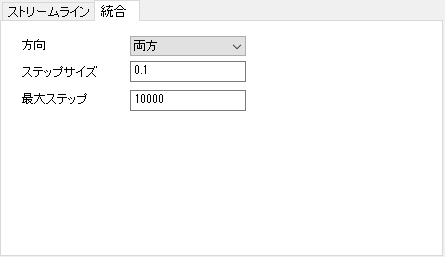

PD-Dialog-Integration-Tab
このタブはストリームラインプロットを作成すると利用できます。ストリームラインの統合方向、ステップサイズ、最大ステップをカスタマイズするためのコントロールを提供します。

始点からの統合方向を指定します。このドロップダウンリストで、前方、後方、および両方を選択できます。
テキストボックスに、ステップサイズを入力します。デフォルトのステップサイズは0.1です。制限より小さい値を設定した場合は、制限されたステップサイズにリセットします。
テキストボックスに、最大ステップを入力します。